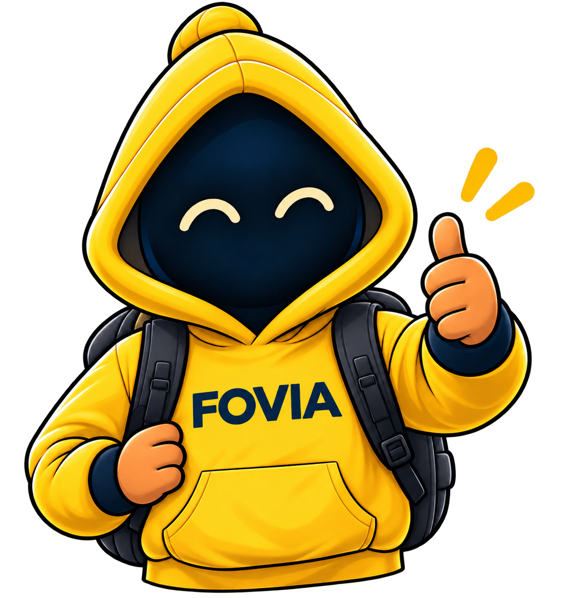

Formation
Créer des passerelles vers les compétences et les ressources adaptées.
Association loi 1901
FOVIA agit pour renforcer l'autonomie, l'inclusion et la participation sociale et professionnelle des personnes en situation de handicap.

Une association en construction
FOVIA a pour objet de favoriser l'autonomie, l'inclusion, l'égalité des chances et la participation sociale et professionnelle des personnes en situation de handicap.
Nous développons progressivement des actions d'information, d'accompagnement, de sensibilisation, de formation, d'accessibilité et de mise en relation.
En savoir plusSoutenir FOVIA
Vous pourrez bientôt soutenir FOVIA par don ponctuel, don mensuel ou virement.